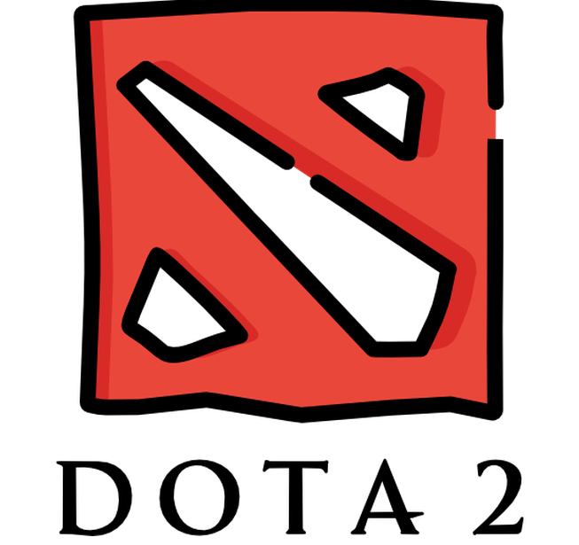

21 de agosto de 2021 - 03:00 a.m.


Dota 2 - Saudades eternas
DotA 2 é a sequência do primeiro Defense of The Ancients, mod desenvolvido sobre a matriz de Warcraft
III.
Embora seu antecessor tenha sido desenvolvido de forma amadora, DotA 2 foi acolhido pela própria Valve.
DotA 2 traz novos elementos estratégicos associados à fantasia clássica de Warcraft.
O game traz batalhas entre equipes, nas quais cada um a deve destruir os “ancestrais” das demais.
Os jogadores utilizam unidades poderosas conhecidas como “heróis”,
e recebem assistência de lutadores controlados pelo computador (os “creeps”).
PS: Infelizmente o game está apenas na lembrança de meus amigos.